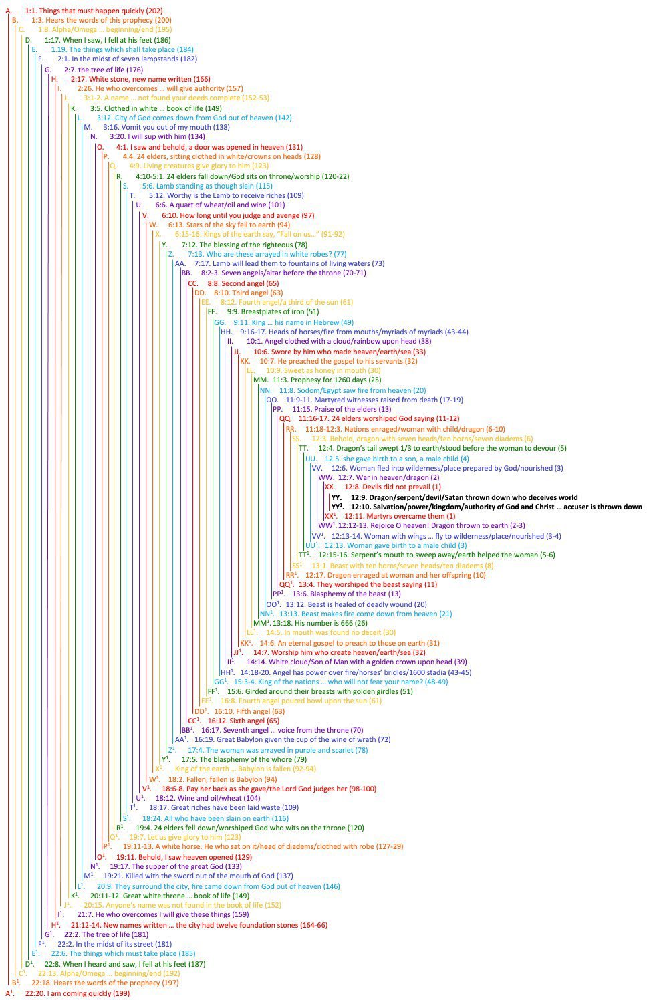

Stacks are everywhere in computer science. When you call function
A and it calls B, and then B
calls C, each function execution creates a stack frame and
pushes it onto the call stack.
When C is done, the stack frame for C is
popped off the stack, then B is popped, then finally,
A. You can visualize the execution like this:
A
B
C
DDCBAThis is sometimes called “unwinding the stack”.
There is a parallel to this structure in the Bible, it’s called a Chiasm (ky-AZ-m). It’s a way of building up grammatical structures and then reversing those structures like unwinding a stack.
What’s extraordinary is how common this is in the Bible. The entire Book of Revelation is a Chiasm:
 (credit to Dean Defuria )